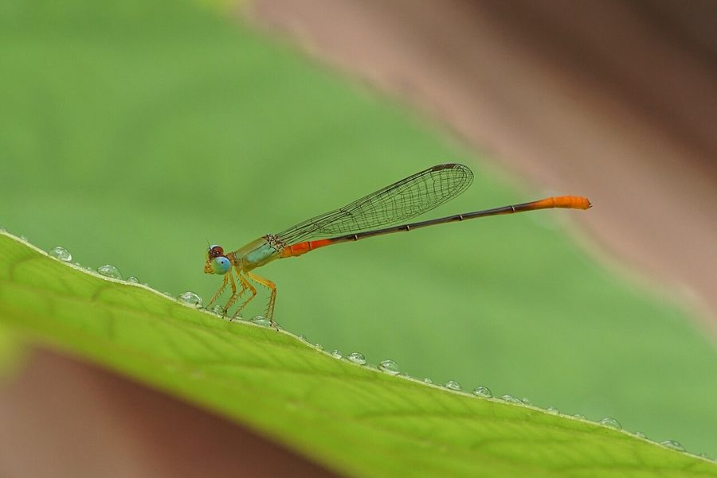

ऑरेंज-टेल्ड मार्श डार्ट व्याध पतंगOrange-tailed Marsh Dart
Ceriagrion cerinorubellum · Coenagrionidae · INS-0198

- Scientific name वैज्ञानिक नाम
- Ceriagrion cerinorubellum (Brauer, 1865)
- Family कुल
- Coenagrionidae
- Hindi हिंदी
- ऑरेंज-टेल्ड मार्श डार्ट व्याध पतंग
- Local names स्थानीय नाम
- orange-tailed marsh dart, orange tailed marsh dart, narangi vyadh patang, marsh dart
- Status here यहाँ की स्थिति
- native
- Movement आवागमन
- Resident, here all year
- Known from कहाँ दर्ज
- Others have published records from the wider Awadh–Purvanchal plain, none yet from Basti–Ayodhya अवध–पूर्वांचल से दूसरों के प्रकाशित अभिलेख, बस्ती–अयोध्या से अभी नहीं
- IUCN IUCN
- not evaluated
- Review समीक्षा
- not yet reviewed
When to look कब देखें
Present all year. साल भर मौजूद।
Uses and possibilities उपयोग और संभावनाएँ
Drawn from the documented uses in the profile below, where each is labelled traditional, current or a research lead. All uses →
Tell it apart from इनसे अलग पहचानें
ऑरेंज-टेल्ड मार्श डार्ट व्याध पतंग / Orange-tailed Marsh Dart
Ceriagrion cerinorubellum (Brauer, 1865) — Coenagrionidae
ऑरेंज-टेल्ड मार्श डार्ट व्याध पतंग — बारहमासी तालाबों, कमल के पोखरों और नहरों के किनारे पाई जाने वाली एक अत्यंत सुंदर और आसानी से पहचानी जाने वाली डैमसेल्फ़्लाई है। इसका सीना चमकीला हरा होता है, पेट का शुरुआती हिस्सा नारंगी-लाल, बीच का हिस्सा काला और पूँछ का अंतिम भाग फिर से नारंगी-लाल होता है। यह जलीय वनस्पतियों के ऊपर धीरे-धीरे उड़ती है और मच्छरों तथा छोटे कीड़ों का शिकार करती है।
Quick Identification त्वरित पहचान
| Feature | Description |
|---|---|
| Size | Medium, slender damselfly; abdomen 31–33 mm, hindwing 20–21 mm (Subramanian 2005) |
| Thorax | Bright grass-green or apple-green above and pale greenish-yellow laterally (Fraser 1933) |
| Basal Abdomen | Segments 1 and 2 and base of 3 bright orange-red or brick red (Subramanian 2005) |
| Mid Abdomen | Segments 3 to 7 velvety black or dark brownish-black above (Fraser 1933) |
| Terminal Abdomen | Segments 8 to 10 bright orange-red or fiery vermilion (Subramanian 2005) |
| Eyes | Olive-green above and pale greenish-yellow beneath (Fraser 1933) |
| Wings | Clear, hyaline with amber pterostigma framed in dark brown (Subramanian 2005) |
Field tip: Look along weed-rich margins of permanent ponds, lotus tanks, and canal edges. The striking three-toned colour scheme—a bright grass-green thorax, an orange-red base, a black middle, and a bright fiery orange-red tail—is unique among Gangetic plain damselflies.
हिंदी: कमल के पत्तों और तालाबों के किनारे बैठने वाली इस डैमसेल्फ़्लाई का सीना हरा होता है, जबकि इसके पेट के दोनों सिरे नारंगी-लाल और बीच का भाग काला होता है।
Morphology आकारिकी
Measurements as given in the handbooks (Subramanian 2005; Fraser 1933):
| Measurement | Range | Source |
|---|---|---|
| Abdomen length | 31–33 mm | Subramanian (2005) |
| Hindwing length | 20–21 mm | Subramanian (2005) |
Adult description:
Ceriagrion cerinorubellum is a moderately large, elegant coenagrionid displaying little sexual dimorphism in colour pattern (Fraser 1933). The head has a black vertex with an olivaceous frons and labrum; the postocular area is entirely pale green without separated postocular spots, a diagnostic trait of the genus Ceriagrion (Subramanian 2005). The synthorax is bright grass-green dorsally, smoothly transitioning to pale yellowish-green on the pleura and whitish beneath (Fraser 1933).
The abdomen is slender, cylindrical, and distinctly tricoloured: segments 1, 2, and the basal third of segment 3 are bright brick-red or vermilion; the remainder of segment 3 through segment 7 is dark brownish-black with narrow pale basal rings; segments 8, 9, and 10 are completely bright orange-red or crimson (Subramanian 2005). The anal appendages in males are short, orange-red, and curved slightly inward (Fraser 1933).
Females resemble males closely in markings, but the abdominal ground colour is slightly paler, the green of the thorax is more olivaceous, and the body is moderately stouter (Fraser 1933). In both sexes, the legs are pale yellow with short black spines, and the wings are hyaline with narrow, dark amber pterostigmata (Subramanian 2005).
Larval Stage निम्फ अवस्था
The aquatic naiad is elongate, pale translucent green or light olive-brown, matching submerged aquatic weeds such as Hydrilla verticillata (Hydrilla). The three caudal lamellae are broadly lanceolate, rounded apically, and marked with faint transverse brownish bands.
हिंदी: इसका पेट 31 से 33 मिमी लंबा होता है। नर और मादा दोनों का सीना हरा और पेट के दोनों सिरे चमकीले नारंगी होते हैं। पानी में रहने वाला इसका निम्फ हल्के हरे रंग का होता है।
Behaviour & Ecology व्यवहार और पारिस्थितिकी
The Orange-tailed Marsh Dart is a wetland specialist associated with perennial, macrophyte-rich water bodies (Subramanian 2005). It prefers calm, unpolluted ponds, oxbow marshes, quiet river bays, and irrigation tanks covered with floating leaves of Nelumbo nucifera (Indian Lotus) and Nymphaea nouchali (Blue Water Lily) (Fraser 1933).
Adults are active throughout the day in sunshine, flying slowly and deliberately between floating leaves and emergent reeds. Males are non-migratory and maintain perches on lotus leaves or protruding stalks, flicking their bright orange abdomen upward when other males venture near (Subramanian 2005). Mating pairs fly in tandem wheel formation among vegetation. Oviposition occurs in tandem: the male remains upright in contact with the female while she inserts eggs into floating or submerged plant stems.
हिंदी: यह शांत पानी वाले बड़े तालाबों में रहना पसंद करती है। नर कमल की पत्तियों पर बैठकर अपने नारंगी सिरे को ऊपर उठाकर अन्य नरों को चेतावनी देता है।
Life Cycle / Phenology जीवन चक्र
Seasonal phenology in northern Indian alluvial wetlands across the agricultural year (Fraser 1933; Subramanian 2005):
| Season / Month | Stage | Field Observation |
|---|---|---|
| July–September (Kharif monsoon) | Adult emergence & breeding | High activity; tandem pairs ovipositing in floating lotus stems (Subramanian 2005) |
| October–November (Post-monsoon) | Peak adult density | High numbers flying along weed-rich lake margins and canals |
| December–January (Rabi winter) | Naiad development | Aquatic nymphs shelter among submerged hydrilla beds |
| February–April (Spring / Zaid) | Adult emergence | Spring emergence around perennial ponds and oxbows (Fraser 1933) |
| May–June (Pre-monsoon summer) | Perennial refuge | Restricted to deep permanent tanks and river backwaters (Subramanian 2005) |
The female uses her robust ovipositor to deposit eggs inside the petioles and pedicels of floating aquatic vegetation, especially Nelumbo nucifera (Indian Lotus) and Eichhornia crassipes (Water Hyacinth). The eggs hatch after a few days into tiny aquatic nymphs. Naiads feed on microinvertebrates, undergoing several moults over several weeks before ascending emergent vegetation at dawn to eclose into adult damselflies.
हिंदी: मादा कमल और जलकुंभी के तनों में अंडे देती है। अंडे कुछ दिनों में फूटते हैं और पानी के अंदर पलने वाला लार्वा कुछ हफ्तों बाद तने पर चढ़कर तितलीनुमा पतंग बन जाता है।
Host Plants or Prey आहार
Ceriagrion cerinorubellum is a predatory carnivore during both aquatic and aerial stages (Subramanian 2005):
Adult diet:
- Adult disease-transmitting mosquitoes, including Culex tritaeniorhynchus (Rice-field Mosquito) and Culex quinquefasciatus (Southern House Mosquito).
- Small agricultural pests active around marshes, including Nilaparvata lugens (Brown Planthopper) and Nephotettix virescens (Green Leafhopper).
- Non-biting midges (Chironomidae), tiny moths, and wetland flies resting on floating leaves.
Larval diet:
- Mosquito larvae, midge larvae, small aquatic crustaceans, and ephemeropteran nymphs in submerged vegetation.
हिंदी: यह डैमसेल्फ़्लाई मच्छरों, धान के फुदकों और पानी के ऊपर उड़ने वाले छोटे कीड़ों का शिकार करती है। इसका निम्फ पानी में पनपने वाले मच्छरों के लार्वा को खाता है।
Predators / Natural Enemies शत्रु
Natural enemies documented in wetland ecosystems across northern India:
- Spiders: Long-jawed orb weavers (Tetragnatha) and large fishing spiders (Dolomedes) ambush resting adults on lotus leaves.
- Predatory dragonflies: Larger anisopterans such as Orthetrum sabina (Slender Skimmer) and Crocothemis servilia (Scarlet Skimmer) readily capture flying adults.
- Fish: Carnivorous freshwater fishes feed upon the aquatic naiads dwelling among submerged roots.
- Wetland birds: Pond herons, pheasant-tailed jacanas, and bronze-winged jacanas pluck adults and emerging nymphs from floating vegetation.
हिंदी: पानी के ऊपर रहने वाली मकड़ियाँ, बड़ी शिकारी व्याध पतंगें और बगुले इस कीट का शिकार करते हैं। पानी के नीचे मछलियाँ इसके निम्फ को खाती हैं।
Agricultural / Human Relevance कृषि प्रासंगिकता
Biological pest control: Ceriagrion cerinorubellum is a valuable beneficial insect in rural wetland mosaics and rice-growing landscapes (Subramanian 2005). Adults forage actively along paddy borders, consuming significant quantities of sap-sucking hopper pests, such as Nilaparvata lugens (Brown Planthopper), and vector mosquitoes transmitting encephalitis and filariasis.
Ecosystem health indicator: Because it depends on perennial, clean, weed-rich water bodies, the presence of stable breeding colonies indicates healthy aquatic ecosystems with good macrophyte diversity (Subramanian 2005).
Traditional: No traditional medicinal, economic, or cultural uses are known.
Today: Celebrated by nature enthusiasts and wetland photographers for its exquisite coloration and docile perching behaviour.
Research direction (a lead, not a result): Quantifying the impact of lotus aquaculture harvesting on Ceriagrion egg survival and nymph recruitment.
हिंदी: यह कीट फसलों को कोई नुकसान नहीं पहुँचाता, बल्कि मच्छरों और धान के हानिकारक कीड़ों को खाकर किसानों की मदद करता है। यह स्वच्छ तालाबों का सूचक है।
Expected Locally स्थानीय रूप से अपेक्षित
Not a field record. Written from published accounts for eastern Uttar Pradesh. No confirmed local sighting yet — if you have seen it, that is what the atlas needs.
अभी तक स्थानीय पुष्टि नहीं। यह विवरण प्रकाशित स्रोतों से है, किसी अवलोकन से नहीं।
The Orange-tailed Marsh Dart is expected across eastern Uttar Pradesh in perennial ponds, oxbow lakes (tals), and canal backwaters rich in lotus and water lily growth. Look along sunny, vegetated shorelines and floating leaves from July through November. GBIF holds published records from the wider Awadh–Purvanchal plain, none yet from Basti–Ayodhya. A photograph showing the green thorax and bi-coloured orange-and-black abdomen, submitted through the About page, would confirm the first local documentation for the district.
Distribution वितरण
Global range: Widespread across South and Southeast Asia, including India, Sri Lanka, Nepal, Bangladesh, Myanmar, Thailand, Malaysia, and Indonesia (Fraser 1933).
In India: Found across peninsular India, the Western and Eastern Ghats, central India, and throughout the northern alluvial plains to Assam and West Bengal (Prasad & Varshney 1995; Mitra 2002).
In Uttar Pradesh: Documented from major wetland complexes, oxbow lakes, and riverine floodplains across central and eastern districts.
In Basti district / eastern UP: Expected as a resident breeding damselfly in permanent village tanks, oxbow marshes, and perennial irrigation canals with abundant floating macrophytes.
हिंदी: यह भारत और दक्षिण-पूर्व एशिया के आर्द्रभूमि क्षेत्रों में व्यापक रूप से पाई जाती है। उत्तर प्रदेश के तालाबों और झीलों में यह मौजूद रहती है।
Research Questions शोध प्रश्न
- How strongly does the presence of Nelumbo nucifera floating leaves correlate with Ceriagrion cerinorubellum territory density? / क्या कमल के पत्तों की संख्या से इस कीट की संख्या बढ़ती है?
- What is the comparative predation rate of Ceriagrion cerinorubellum on Culex versus Anopheles mosquitoes?
- How severely does the seasonal desiccation of village ponds in summer affect local nymphal survival? / गर्मियों में तालाब सूखने पर इसके निम्फ कैसे जीवित रहते हैं?
- What visual cues trigger the abdominal flicking territorial display in resident males?
- Can school nature clubs easily monitor this species along village pond edges without specialized equipment?
Similar Species मिलती-जुलती प्रजातियाँ
| Species | How to tell apart | हिंदी | |
|---|---|---|---|
| Ceriagrion coromandelianum ([[coromandel_marsh_dart\ | Coromandel Marsh Dart]]) | Entire abdomen uniform bright citron-yellow; entirely lacks the dark black middle segments | कोरोमंडल मार्श डार्ट — पूरा पेट पीला |
| Pseudagrion rubriceps ([[saffron_faced_blue_dart\ | Saffron-faced Blue Dart]]) | Bright orange face, olive-green thorax, but terminal abdomen segments are blue, not orange-red | सैफ़्रन-फ़ेस्ड ब्लू डार्ट — नीली पूँछ |
| Ischnura senegalensis ([[senegal_golden_dartlet\ | Senegal Golden Dartlet]]) | Smaller; thorax green and black; abdomen segment 8 bright azure-blue, not orange-red | सेनेगल गोल्डन डार्टलेट — नीली पूँछ वाली छोटी डार्ट |
Field rule: A medium-sized damselfly of lotus ponds whose bright grass-green thorax is paired with an abdomen that is orange-red at both ends and velvety black in the middle is the Orange-tailed Marsh Dart.
हिंदी: कोरोमंडल मार्श डार्ट का पूरा शरीर पीला होता है, जबकि ऑरेंज-टेल्ड मार्श डार्ट का सीना हरा और पेट दोनों सिरों पर नारंगी तथा बीच में काला होता है।
Taxonomy & Classification वर्गीकरण
Original description. Described by Friedrich Brauer in 1865 (under the basionym Pyrrhosoma cerinorubellum) as Ceriagrion cerinorubellum in Verhandlungen der kaiserlich-königlichen zoologisch-botanischen Gesellschaft in Wien, 15, page 511. Type locality: "Ceylon" (Sri Lanka).
Subspecies. Monotypic — no subspecies are currently recognized across its broad Indo-Malayan range.
Family and order placement. Order Odonata, suborder Zygoptera, family Coenagrionidae. The genus Ceriagrion Selys, 1876, comprises marsh damselflies characterized by the absence of separated postocular spots and brightly coloured abdomens.
Phylogenetic notes. Ceriagrion cerinorubellum is a well-defined member of the genus, distinguished from C. coromandelianum and C. olivaceum by its distinctive tricoloured abdomen and specialized penile structure (Subramanian 2005).
IUCN status rationale. Not evaluated (NE) on the global IUCN Red List of Threatened Species. It is an abundant and secure wetland zygopteran throughout its extensive South and Southeast Asian range.
हिंदी: इसका वैज्ञानिक नाम Ceriagrion cerinorubellum है और यह Coenagrionidae परिवार की सदस्य है। प्रकृति में इसका अस्तित्व सुरक्षित है।
Photo Gallery फोटो गैलरी
No photos yet — add field photos to media/species/orange_tailed_marsh_dart/ and run node scripts/sync_photos.js.
Photos needed आवश्यक फोटो
- [ ] Adult male perched on lotus leaf showing tricoloured pattern (कमल के पत्ते पर बैठा रंग-बिरंगा नर)
- [ ] Adult female showing ovipositor and thoracic markings (मादा की शारीरिक बनावट)
- [ ] Tandem mating pair on emergent vegetation (कमल की डंडी पर प्रजनन करती जोड़ी)
- [ ] Aquatic nymph among hydrilla vegetation (पानी के अंदर जलीय पौधे पर निम्फ)
References संदर्भ
- Brauer, F. (1865). Dritter Bericht über die auf der Weltfahrt der kais. Fregatte Novara gesammelten Libellulinen. Verhandlungen der kaiserlich-königlichen zoologisch-botanischen Gesellschaft in Wien, 15: 501–512 [p. 511].
- Fraser, F. C. (1933). The Fauna of British India, Including Ceylon and Burma. Odonata, Vol. 1. Taylor and Francis, London, pp. 326–328.
- Subramanian, K. A. (2005). Dragonflies and Damselflies of Peninsular India — A Field Guide. E-book of Project Lifescape, Centre for Ecological Sciences, Indian Institute of Science and Indian Academy of Sciences, Bangalore, p. 58.
- Prasad, M. & Varshney, R. K. (1995). A check-list of the Odonata of India including data on larval studies. Oriental Insects, 29(1): 385–428.
- Mitra, T. R. (2002). Geographical distribution of Odonata (Insecta) of Eastern India. Memoirs of the Zoological Survey of India, 19(1): 1–208.
- GBIF Occurrence Data — Ceriagrion cerinorubellum, India (2025).
Source file: species/fauna/insects/orange_tailed_marsh_dart.md